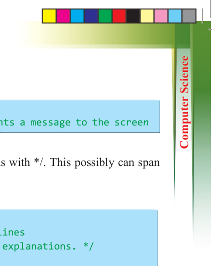
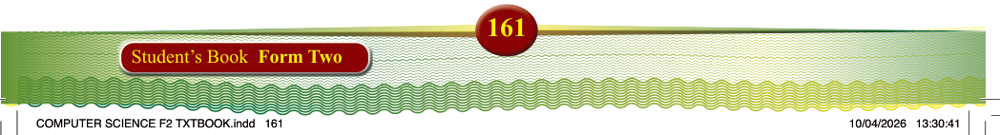
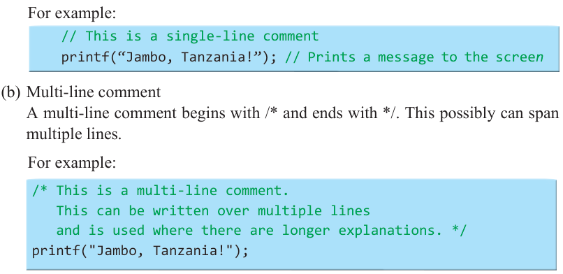
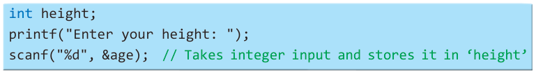

For example:

// This is a single-line comment printf(“Jambo, Tanzania!”); // Prints a message to the screen
(b) Multi-line comment
A multi-line comment begins with /* and ends with */. This possibly can span multiple lines.
For example:
/* This is a multi-line comment.
This can be written over multiple lines and is used where there are longer explanations. */ printf("Jambo, Tanzania!");
Displaying output (printf) and taking input (scanf)
(a) printf()
The printf() function is used to display output on the screen. For example:
printf("Jambo, Tanzania!"); // Prints "Jambo, Tanzania!" to the screen
(b) scanf()
The scanf() function is used to get input from the user. It captures the data entered
from the keyboard and saves it in a variable. For example:

int height; printf("Enter your height: ");
scanf("%d", &age); // Takes integer input and stores it in ‘height’
Understanding escape sequences
Escape sequences are special characters that represent specific actions or formatting within a string.
(a) \n (Newline)
This character inserts a new line (moves the cursor to the next line). For example:
printf("Jambo\nTanzania!"); // Output: Jambo (new line) Tanzania!
(b) \t (Tab)
This character inserts a horizontal tab space. For example:

printf("Name:\tTembo\n"); // Output: Name: (space) Tembo